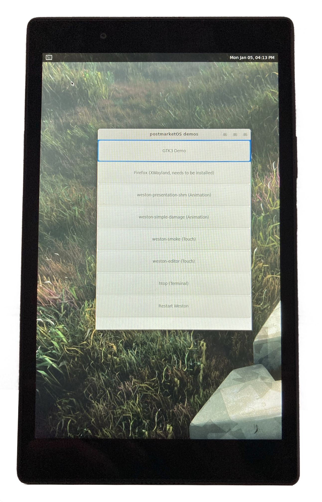
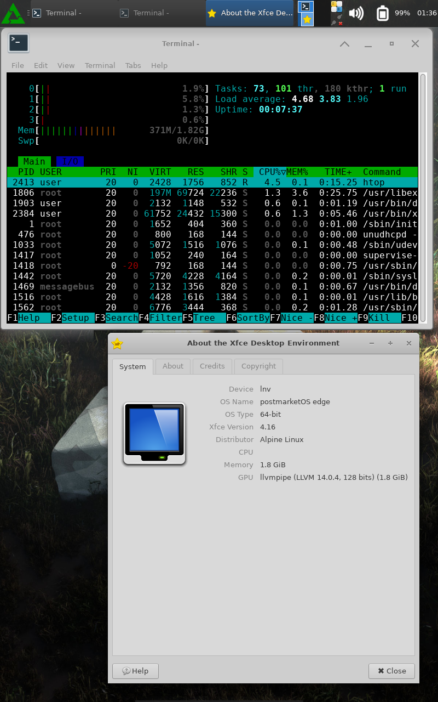

Lenovo Tab 4 8 (lenovo-tb8504f)
|
 A Lenovo Tab 4 8 running postmarketOS | |
| Manufacturer | Lenovo |
|---|---|
| Name | Tab 4 8 |
| Codename | lenovo-tb8504f |
| Released | 2017 |
| Category | testing |
| Original software | Android |
| Original version | 7.0 |
| postmarketOS kernel | 3.18.140 |
| Hardware | |
| Chipset | Qualcomm APQ8017 |
| CPU | 1.4 GHz Cortex-A53 |
| GPU | Adreno 306 |
| Display | 800x1280 IPS LCD |
| Storage | 16GB |
| Memory | 2GB |
| Architecture | aarch64 |
| Unixbench Whet/Dhry score | 1166.2 |
{kind=link}
| USB Networking |
Works
|
|---|---|
| Flashing |
Works
|
| Touchscreen |
Partial
|
| Display |
Works
|
| WiFi |
Broken
|
| FDE | |
| Mainline | |
| Battery |
Works
|
| 3D Acceleration |
Broken
|
| Audio | |
| Bluetooth |
Partial
|
| Camera | |
| GPS | |
| Mobile data |
Unavailable
|
| SMS |
Unavailable
|
| Calls |
Unavailable
|
| USB OTG / USB-C Role switching |
Works
|
| NFC | |
| Accelerometer | |
|---|---|
| Magnetometer |
Unavailable
|
| Ambient Light | |
| Proximity | |
| Hall Effect |
Unavailable
|
| Barometer | |
| Power Sensor | |
| Camera Flash | |
|---|---|
| Keyboard | |
| Touchpad | |
| USB-A | |
| HDMI/DP | |
| Ir TX | |
| Ir RX | |
| Stylus | |
| Haptics | |
| Ethernet | |
| FOSS bootloader | |
| This page is about WiFi-only tablet lenovo-tb8504f. For LTE tablet, see lenovo-tb8504x. |
Contents
Contributors
- Angus-g
Users owning this device
Unlocking
In developer options the allow oem unlock toggle may be unexpectedly disabled. In this case, try a software update to confirm latest (final) version, similar to tb-8504f_s001019_190909_row. The fastboot key combo is volume down + power. No device-specific information (e.g., bootloader version) is presented on the fastboot splash screen. fastboot getvar all shows some basic details. The standard unlock command fastboot oem unlock gives a warning and shows the correct command.
Installation
Install TWRP (3.2.3 and 3.3.1 are available). Format the System partition to prepare for the postmarketOS image. Either install from a recovery zip directly in TWRP, or use pmbootstrap flasher as usual.
Note: install from a recovery zip using sdcard or via sideload fail with the initramfs-extra not found splash screen.
Status
Using the LineageOS kernel (which is derived from Lenovo's open-sourced kernel), we can boot to a graphical display with USB networking. If CONFIG_USB_G_ANDROID is not set, it seems that there are a lot of errors regarding charging when connected via USB, and the boot doesn't get through to init. The touchscreen is detected, but the driver gets disabled in libinput due to a kernel bug.
Hardware details
Chipset
The chipset appears to be APQ8017, with an Adreno 300-series GPU. It seems to be very similar (at the devicetree level) to MSM8917. Neither of these currently have a mainline kernel effort. Wikipedia suggests the Snapdragon 425 MSM8917 is software-compatible with MSM8937.
The values are estimated strictly from software, not hardware, results (fastboot, adb, or twrp-3.3.1-1-TB8504 [unified 8504f/x)], using the commands given below.
chipset details (software-derived)
| feature | value | source |
|---|---|---|
| variant | QRD eMMC | fastboot |
| product | QC_REFERENCE_PHONE | fastboot |
| baseband | fastboot | |
| bootloader | fastboot | |
| kernel | 3.18.71-perf-gec07f0ae-dirty Aug 2019 | adb |
| Hardware | Qualcomm Technologies, Inc APQ8017 | adb |
| CPU max freq (KHz?) | 1401000 | twrp |
| CPU min freq (KHz?) | 960000 | twrp |
| GPU model | Adreno306v33 | twrp |
| GPU max freq (Hz) | 598000000 | twrp |
| GPU min freq (Hz) | 270000000 | twrp |
| GPU target freq (Hz) | 400000000 | twrp |
| compatible | qcom,msm8917-qrd-sku5 | twrp |
| model | Qualcomm Technologies, Inc. MSM8917-PMI8937 QRD SKU5 | twrp |
| Bluetooth | ? | (8017 is 4.2, 8917 is 4.1?) |
sample commands (software-derived)
fastboot getvar all
cat /proc/version
cat /proc/cpuinfo
cat /sys/devices/system/cpu/cpu0/cpufreq/cpuinfo_max_freq
cat /sys/devices/system/cpu/cpu0/cpufreq/cpuinfo_min_freq
cat /sys/class/kgsl/kgsl-3d0/gpu_model
cat /sys/class/kgsl/kgsl-3d0/max_clock_mhz
cat /sys/class/kgsl/kgsl-3d0/max_gpuclk
cat /sys/class/kgsl/kgsl-3d0/min_clock_mhz
cat /sys/class/kgsl/kgsl-3d0/devfreq/target_freq
cat /sys/firmware/devicetree/base/compatible
cat /sys/firmware/devicetree/base/modelCPU Tuning
According to cpufreq-info (cpufrequtils package), the chipset does indeed have a tiny frequency range, 960MHz - 1.4GHz. Benchmarks (ubench) show trivial differences in performance between the available frequency governors (default is performance), and all result in thermal throttling (frequency limiting).
Battery
Charging works, monitor via systool -v -c power_supply
Sensors
Output of sudo hwtest
hwtest output
| Category | Model | Path | Status | Value |
|---|---|---|---|---|
| framebuffer | mdssfb_80000 | /sys/class/graphics/fb0 | Working | U:800x1280p-60 |
| framebuffer | mdssfb_a0000 | /sys/class/graphics/fb1 | Working | |
| input | gpio-keys | /dev/input/event3 | Working | |
| input | hbtp_vm | /dev/input/event2 | Working | |
| input | fts_ts | /dev/input/event1 | Working | |
| input | qpnp_pon | /dev/input/event0 | Working |
hwtest output (kleintux 20221119)
| Category | Model | Path | Status | Value |
|---|---|---|---|---|
| framebuffer | mdssfb_80000 | /sys/class/graphics/fb0 | Working | U:800x1280p-60 |
| framebuffer | mdssfb_a0000 | /sys/class/graphics/fb1 | Working | |
| input | himax-touchscreen | /dev/input/event3 | Working | |
| input | gpio-keys | /dev/input/event2 | Working | |
| input | hbtp_vm | /dev/input/event1 | Working | |
| input | qpnp_pon | /dev/input/event0 | Working |
Output of sensors (lm-sensors package):
sensors output
$ sensors
battery-virtual-0
Adapter: Virtual device
temp1: +26.0C
xo_therm-virtual-0
Adapter: Virtual device
temp1: +0.0C
xo_therm_buf-virtual-0
Adapter: Virtual device
temp1: +0.0C
case_therm-virtual-0
Adapter: Virtual device
temp1: +0.0C
tsens_tz_sensor0-virtual-0
Adapter: Virtual device
temp1: +0.0C
tsens_tz_sensor1-virtual-0
Adapter: Virtual device
temp1: +0.0C
tsens_tz_sensor2-virtual-0
Adapter: Virtual device
temp1: +0.0C
tsens_tz_sensor3-virtual-0
Adapter: Virtual device
temp1: +0.0C
tsens_tz_sensor4-virtual-0
Adapter: Virtual device
temp1: +0.0C
tsens_tz_sensor5-virtual-0
Adapter: Virtual device
temp1: +0.0C
tsens_tz_sensor6-virtual-0
Adapter: Virtual device
temp1: +0.0C
tsens_tz_sensor7-virtual-0
Adapter: Virtual device
temp1: +0.0C
tsens_tz_sensor8-virtual-0
Adapter: Virtual device
temp1: +0.0C
tsens_tz_sensor9-virtual-0
Adapter: Virtual device
temp1: +0.0C
pm8937_tz-virtual-0
Adapter: Virtual device
temp1: +28.7C (crit = +145.0C)
pa_therm0-virtual-0
Adapter: Virtual device
temp1: -0.0CFor reference, output of sensorssandbox (v1.8, f-droid):
sensorssandbox results
| sensor | vendor |
|---|---|
| BMA255 Accelerometer / Temperature / Double Tap | Bosch |
| Step Detector | QTI |
| Step Counter | QTI |
| Significant Motion Detector | QTI |
| Tilt Detector | QTI |
| Basic Gestures | ? |
| Facing | ? |
| Pedometer | QTI |
| Motion Accel | QTI |
| Coarse Motion Classifier | ? |
Photos
|
{kind=link}
See also
- pmaports!2048 Initial merge request
- Device package
- Kernel package